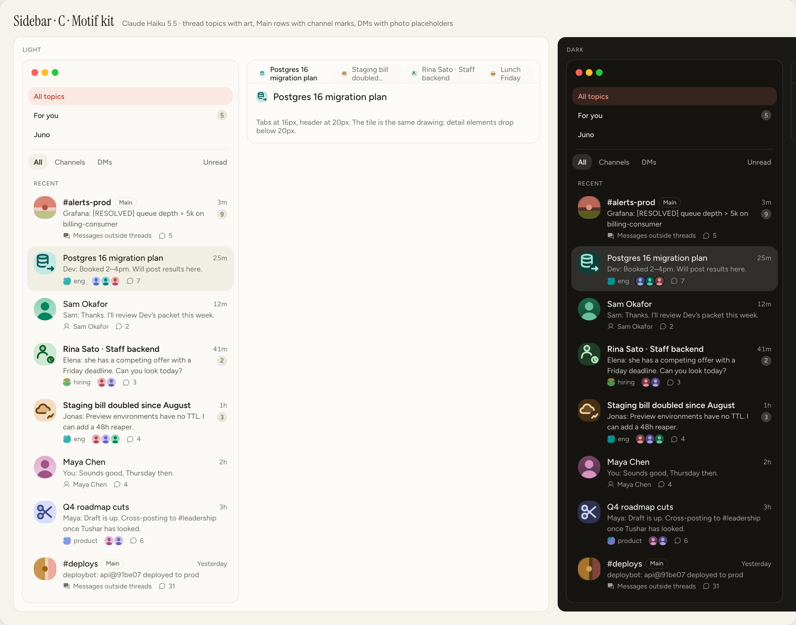
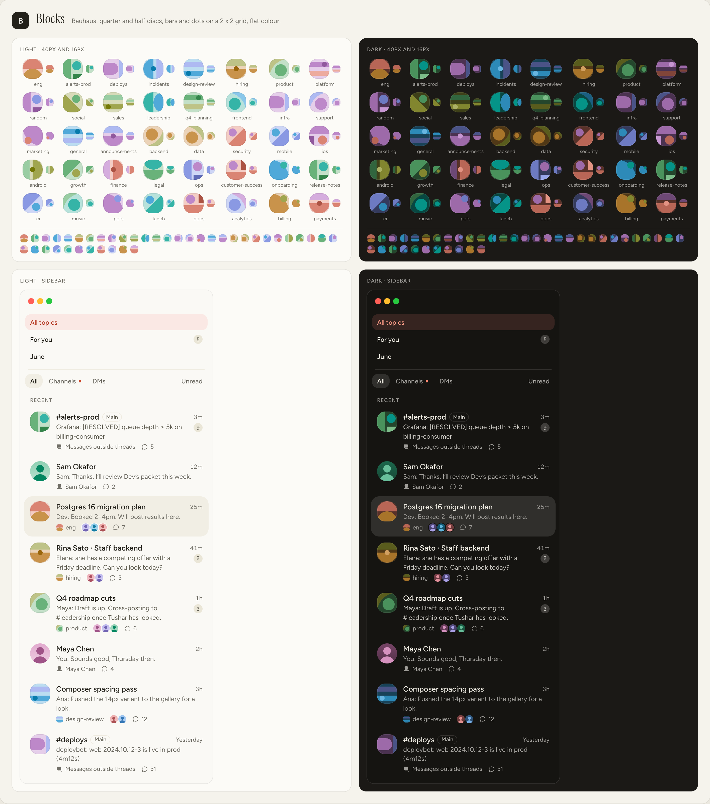
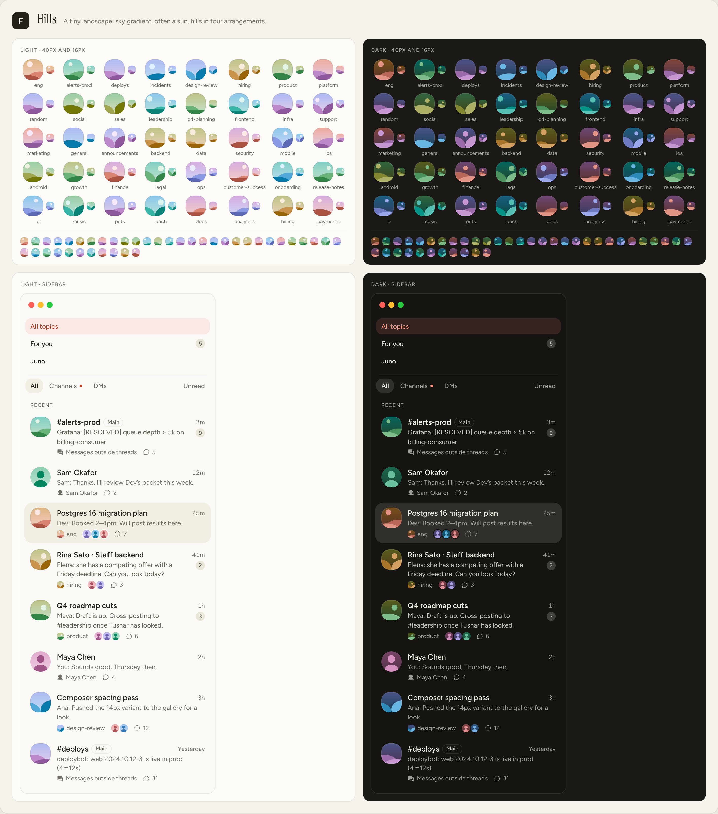

Two open design picks
Both are about the square tile at the start of each sidebar row. Thread topics get topic art about what the thread discusses. Channel Main rows, and any topic whose art is still generating or when AI is off, use the channel's channel mark. People in DMs always show their Slack photo.
1. Topic art approach
An AI model looks at a thread's title and messages and picks or draws a small illustration about it. Generated once per topic and cached; you can ask for a redraw.
C · Motif kit, picked by Claude Haiku
About 80 hand-designed motifs in Juno's style. The model only chooses and combines them, so every icon is consistent and theme-correct. About $0.0002 per topic (6 cents for 300 topics), about 1 s. Vague topics fall back to the channel mark.

B · Constrained drawing, by Claude Sonnet
The model draws each icon itself, but only with a small validated vocabulary (shapes, stroke style, palette tokens), so it stays theme-safe. Best individual drawings; about 20× the cost of C and slightly less consistent.

Dropped: free-form SVG (ignored the theme, inconsistent, collapsed many topics into one glyph) and a hybrid (C's results at 2–3× the cost). If you want something more painterly than icon-like, say "more artistic" and I'll explore a richer drawing style.
2. Channel mark style
Generative marks: each channel gets a unique, deterministic mark from its ID, with colours nudged by its name (alerts lean coral, eng leans teal). Instant, free, and you can shuffle or pin one per channel.
B · Blocks
Bauhaus quarter discs, bars and arches on a 2×2 grid, flat colour. The most intentional, and recognisable by shape even at 16 px on the meta line.

F · Hills
A tiny landscape: sky gradient, sun and hills. The friendliest and most picture-like, but a little muddier at 16 px.

Also explored: A Bloom (gradient orbs, suggested for group DMs), C Sunset, E Tide. Their sheets are in the folder.